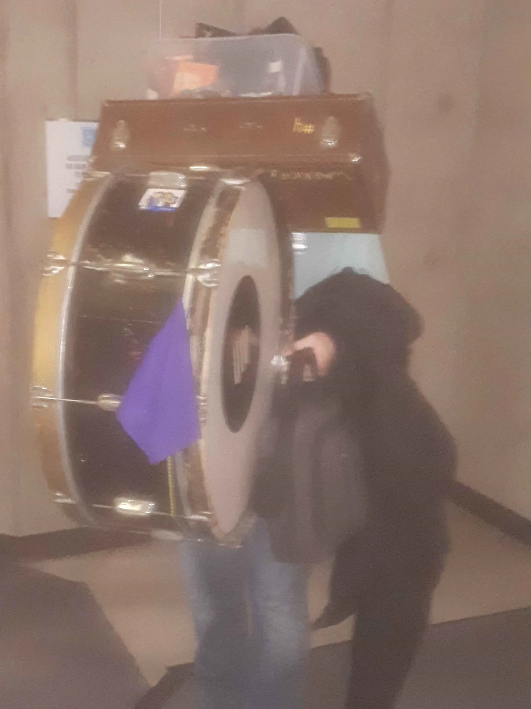
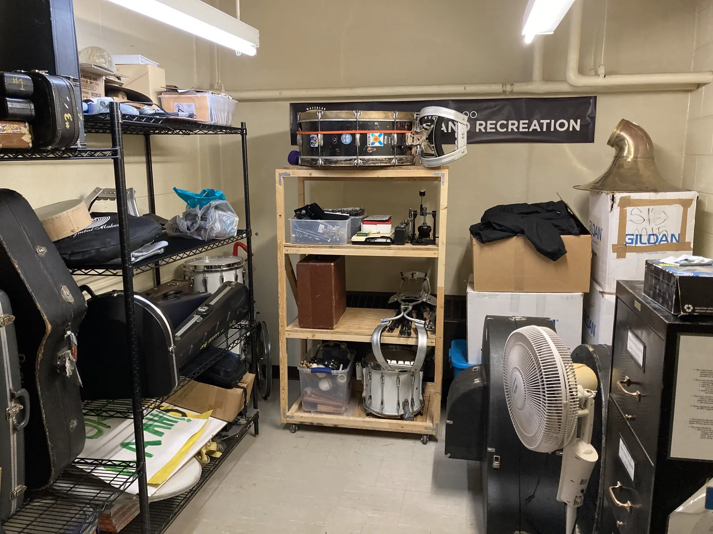
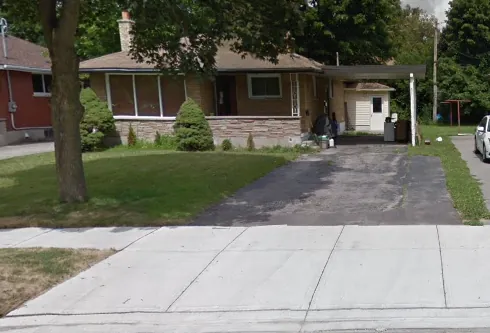
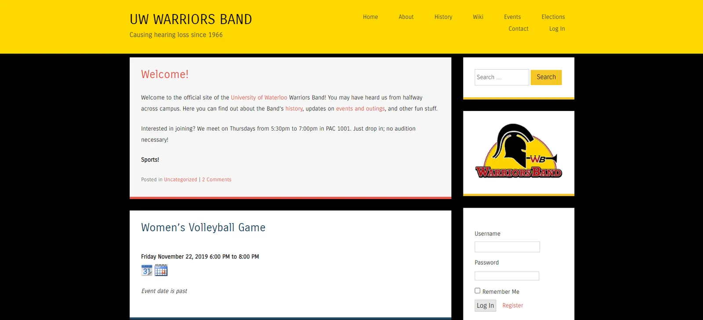
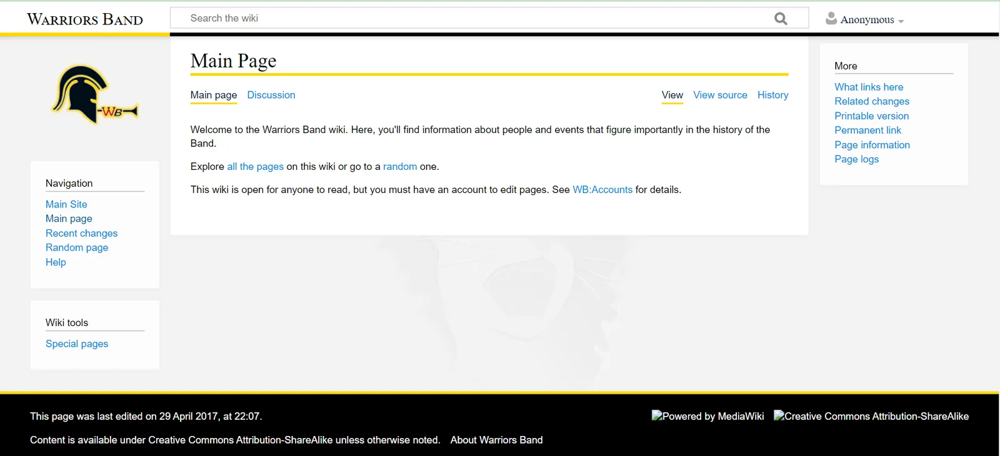
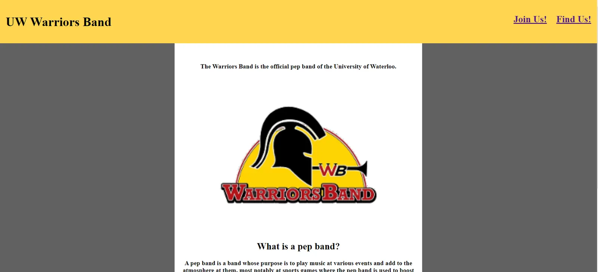
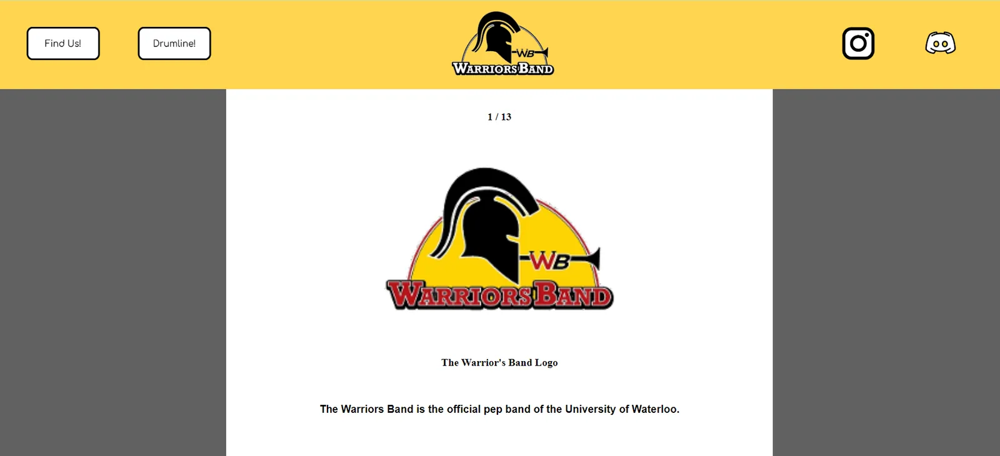
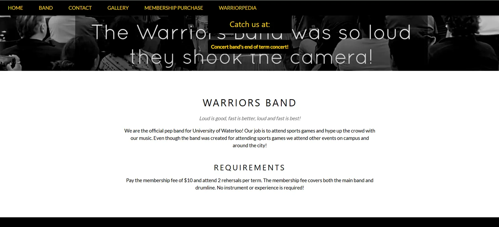

Constitution
The Constitution is the document that governs the Warriors Band. The current version includes specifications of the band's purpose, fees, executive positions, and election and impeachment processes.Last Updated 2023
The band also had a constitution when it was a club under Feds. This version of the constitution was retired when the Band became an Athletics club once again.
Constitutional Role
The Constitution refers to the Executives as "Executive Officers", and includes the following guidance under that section:The club is limited to 2 non-student executives; every other executive member must be a current student. The Chief Centurion must be a current UW student. All club executives will be elected, not hired or appointed. The term of office for all executive positions is one academic term. All non-instant club decisions (Not including: song choice, other quick decisions) will be made as a collective by executive vote; no one member may make decisions for the entire club.
Elections
In the 1171 term, the Band became a democracy, and a constitution was put into place. This constitution specified that elections must be held to determine the Band's executives. The first round of elections under this system were held for the 1175 term, although all the candidates were acclaimed as they ran unopposed. The first term in which an actual election was held was in 1181 for the role of Technomancer.As of 1191, the Band has unofficially lapsed back into dictatorship, with all executive nominees being acclaimed again and the CCWB holding more and more power. This seems to be a more efficient method of government in times of lower interest in the Band.
Elections are still running, and the style is determined by the CCWB and how many people nominate themselves for a role. Elections are usually at the end of term.
Fees
Band fees are collected each term. As of the 1249 term, band fees are officially collected by Athletics.Membership Fee
The membership fee is $15 and is done through the PAC Membership Portal.Uniform Fees
Band uniforms can be bought for $10 for a band t-shirt and $20 for a band hoodie or jacket. Buying is not required, as the band allows members to borrow a shirt or jacket for events.Equipment Rental Fee
Members from the Warriors Band and other various musical clubs can rent instruments through the Warriors Band for $10 a term. Otherwise, members of the Warriors Band can borrow an unrented instrument at practices/events.Impeachment
Impeachment is a process for relieving an executive of their position.Steps
As described by the Constitution, the steps for impeachment are as follows:- A verbal warning from the CCWB or from the DCCWB
- A written warning from a simple majority of executive members
- A general vote for impeachment from the members as a whole
Nick Boyko is the only exec known to be impeached.
Safety Policy
The Warriors Band safety policy contains rules for the safe use of wearable instruments (i.e., the small bass drum, snare drums, and sousaphones), as well as the large bass drum. Its modern form was first drafted by the Executives of 1179.Large Drum
- At least two people are required to lift it.
- When placed in the stands, it must be secured with bungee cords.
-
When it is being transported on its chariot.
- It must be secured to the chariot with bungee chords.
- No running or sharp turns while pulling the chariot.
- One member should walk behind the chariot and ensure that the drum doesn't fall off.
Sousaphone
- If it is a member's first time playing a sousaphone, they should ask another member to demonstrate how to safely put it on.
- How to put on the sousaphone:
- Pick up the sousaphone by its body, using your legs and not your back. If you can't do this by yourself, ask another member for help.
- Lift it over your head and rest the body on your left shoulder.
- Players must pay attention to doorways and other obstacles at the height of the sousaphone's bell.
General Guidelines
- Wearers of the small bass drum, snare drums, or sousaphones must be able to support them comfortably, without strain.
- While wearing the small bass drum, a snare drum, or a sousaphone:
- No running.
- No rushing up and down stairs.
- While on stairs, keep a railing within arm's reach if one exists.
The Loopholes
Instant Executive
There is no constitutional standard set for the filling of empty executive roles. The process is covered under the meeting notes for 1171-80 and 1171-92.1171-80 Meeting
During the meeting of 1171-80, the case of unfilled positions was discussed. It was decided that any members interested in a position would establish said interest by the end of the second week, at which point an election would be held.1171-92 Meeting
In the meeting of 1171-92, the issue was discussed further in regards to the position of Quartermaster. It was discussed that if no member established interest before the second week, any member interested could take the position freely.Impact
Due to this constitutional hole, it is reasonably possible for any member to take an executive position without an election after the 2nd week. In practice this is unlikely, as this was not the intention of the Constitution.Deputy Chief Centurion
A further concern is the position of DCCWB, which can be held by multiple members. In theory, there could be an infinite number of DCCWBs, which is compounded by the Instant Executive loophole. In practice, the band is limited to one DCCWB not holding another executive position.1175-121 Meeting
In the meeting of 1175-121, it was decided that acclaimed execs could mark their positions as interim at the start of term, thus triggering another election. If no one is to run, then the acclaimed exec shall resume their position.Equipment Repair
The Equipment Repair Student (as defined by the Constitution) is a member who is appointed by the Quartermaster to repair or maintain equipment. It is a pseudo-executive position by the nature of the appointment, as well as the precedent set by the Executive of 1171, in which the Equipment Repair Student was considered a full voting Executive member.USAF March
The USAF March is constitutionally required to be played for whatever home team is playing. This leads to a defiance of precedent at any away game, as the band would be required to play for the non-UW team.Band Bases
Here are some notable places where the Warriors Band has settled in the past.Storage Room


The Warriors Band uses the Storage Room to store instruments, music, and other equipment. In the past it
was also known as The Band Closet.
Inventory
The entire inventory of the band wass contained within the Storage Room (PAC 1001C). A census of the contents was most recently undertaken in the intersession between 1171 and 1175.Later on the storage room became PAC 2012 which upgraded the band from a crawlspace to an actual locker. There are also stories of items being stored in the cages of PAC 1101.
Shelves
During 1161, the shelving in the Storage Room (PAC 1001C)was upgraded by Matt Weston. The shelves have been reorganized on multiple occasions. When the band switched rooms it is unknown where most of the shelving units came from.The images show the current storage room and a photo from when the band was moving stuff from PAC 1001C to PAC 2012.
Band House

The Band House is housing in which multiple Warriors Band members live, likely as the only occupants. In
the past, the Band House has also functioned as:
- A location for band social events.
- A temporary residence for visiting members.
- A storage space for band equipment and paraphernalia.
34 High Street
During the 1169, 1171, and 1175 terms, five band members lived in the basement of a detached house at 34 High Street in Waterloo: Nicholas Boyko, Onie Tam, Thomas Broadley, Gaetan Boué (1169 and 1171), and Gavin Leibovitz (1175, former member).Practice Locations
Here are the documented Practice Locations the band has been:PAC 1001
The home base of the band. Most practices in the band's history have been here.PAC 2021
In the years 122X-1245, PAC 2021 was given to the band as practice space due to conflicts and renovations of PAC 1001.PAC Staircase
In front of the stairs in PAC West was where the band first started practicing. The Drumline followed suit by practicing in front of PAC South Stairs in the warmer months of 1249.DC 1350
The practice room for the Drumline's first term. The following term they would also get PAC 1001.The Website
The website of the Warriors Band is primarily the place where members get information about the band and has contact information to allow people to contact the band and its social medias. The Technomancer provides technical support for maintaining the website, but updating its content is the collective responsibility of the executive team.Formerly at warriorsband.com, the website now resides at warriorsband.uwaterloo.ca.
Pre-Johann Era
First Version
The Wayback Machine suggests that the first version of the website was set up for the 35th Anniversary Reunion in 2002. It included a link to RSVP to the event and a photo gallery of the reunion. A WHOIS lookup for warriorsband.com reveals that the domain was registered on June 11, 2001.According to the Wayback Machine, this version was down from time to time in 2003 due to routing issues.
Second Version
The second version of the website appears to have been made live in October 2005. It was designed to be a more permanent website online home for the band.This version had pages for events, history, and a photo gallery. It used Flash for interactive and dynamic elements.
Third Version
The third version of the website, whose look was heavily inspired by the previous version, was a custom PHP application written by Computer Whiz Paul Hendry and hosted on a server in Steve Hayman's basement. The code is available on GitHub under warriorsband/warriorsband.com and pshendry/warriorsband. This version of the website allowed its members to RSVP to events. However, it required its administrators to manually create accounts for each member. A photo gallery that showcased some photos of the band and pages that documented a selection of the band's history were also present.By 1145, this version had become unstable. Presumably as a consequence of being a hobby server in a basement, the website would be down for periods of time. This version was last left being unable to connect to its database.
Johann's Website

This version of the website was set up by Johann Tutor in 1149. It
is a WordPress installation hosted on CS Club servers. This version was largely inspired by the previous
version, aiming to include most of the features and content but refresh the look to be more "modern".
Like the previous version, this version allowed its members to RSVP to events. Unlike the previous
version, members have the ability to create their own accounts; all that is needed is an invitation
code, which is given out in the first few weeks of each term. Like the previous version, members can, in
their profiles, specify what term and program they are currently in, whether they are on campus and will
be attending events, and any other personal information they would like to share. The About page and the history pages were copied from the previous version with improved formatting. The old photo gallery was not used, and a new one was put in its place.
Additionlly, this version also has a social area where members can share public status messages and send each other private messages.
In 1171, a new section was added to enable members to vote during elections.
Johann's Wiki

The wiki was an addition to the website in 1175, with preparations
being done in the weeks before the term started. It was also set up by
Johann Tutor. After seeing that new history pages had not been written, especially for events like the 50th anniversary reunion, CCWB Nicholas Boyko suggested that the Band should have a wiki so that the Band's members can contribute these pages, making it a collective responsibility.
Post-Migration Website

Shortly after Johann's website and wiki were active, the website and wiki had to be taken down. Due to
CS Club policies, using WordPress was not allowed. After getting the pages removed, the wiki was just a
relic in time, and the website was made to be extremely barebones until someone came around to update
it. The barebones site had direct links to Discord and Instagram that did not work as well as the most
basic information about the band (what we are, practice times/locations) , a good chunk of it outdated.
Eva's Website Update

In 1241 Eva Pearson
became the technomancer with the set purpose of updating the website. Taking elements from the
Post-Migration Website, she created a version of the site with updated information with more context to
the band. She also repaired the links to social media and other parts of the site and made the pictures
look nicer.
This version also contained a slideshow of band photos. The "W-A-R-R-I-O-R-S Hail Warriors!" is moving across the top of the Find Us page. This was her first time making a website project in HTML. It was a little crude.

In 1251 Eva Updated the site to give it a clean and modern look.
Eva's Wiki Recreation

WordPress allowed people to create accounts to update the site. With the CS Club, members cannot do that, so for regular maintenance, there is a form that members can fill out so The technomancer can make those updates/changes to the wiki.